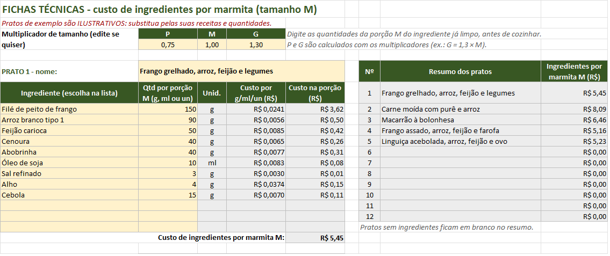

Ficha técnica de marmitex: modelo para calcular o custo por porção
A ficha técnica é a "receita com preço": diz quanto de cada ingrediente vai em uma marmita e quanto isso custa. Sem ela, todo cálculo de preço é chute. Com ela, você sabe o custo de cada prato e percebe na hora quando um aumento no mercado come a sua margem.
Os quatro conceitos que você precisa
- Peso bruto: como você compra (frango com osso e pele, cenoura com casca).
- Peso líquido: o que sobra depois de limpar, descascar, desossar.
- Aproveitamento = peso líquido ÷ peso bruto. O inverso disso é o fator de correção (peso bruto ÷ peso líquido), nome comum em cozinha profissional.
- Fator de cocção = peso cozido ÷ peso cru (já limpo). Arroz e macarrão ganham peso ao cozinhar; carnes costumam perder.
Passo 1: custo por grama aproveitável
Divida o preço pela quantidade comprada e depois pelo aproveitamento:
custo por g líquido = (preço ÷ gramas compradas) ÷ aproveitamento
Exemplo ilustrativo: coxa e sobrecoxa a R$ 13,90 o kg. Você limpa 1 kg e sobram 700 g aproveitáveis (aproveitamento de 70%, fator de correção de cerca de 1,43).
- Sem considerar a perda: R$ 13,90 ÷ 1.000 g = R$ 0,0139 por grama.
- Considerando a perda: R$ 0,0139 ÷ 0,70 ≈ R$ 0,0199 por grama.
Diferença de mais de 40% no custo da proteína. Em 150 g por marmita, são cerca de R$ 2,09 contra R$ 2,98. Quem calcula pelo preço bruto acha que a marmita custa quase R$ 1 a menos do que custa de verdade.
Passo 2: da porção servida para a quantidade crua
Você serve arroz cozido, mas compra arroz cru. Para calcular o custo, a ficha precisa da quantidade crua (já limpa). Use o fator de cocção:
quantidade crua = porção servida ÷ fator de cocção
- Arroz: se 1 kg de arroz cru rende 2,5 kg cozido (fator 2,5, ilustrativo) e você serve 225 g cozidos, a quantidade crua é 225 ÷ 2,5 = 90 g.
- Frango grelhado: se 1 kg de filé limpo vira 700 g grelhado (fator 0,70, ilustrativo) e você quer 105 g grelhados na marmita, a quantidade crua é 105 ÷ 0,70 = 150 g.
O jeito mais confiável: pesar a panelada
Em vez de pesar uma porção, pese o lote inteiro. Exemplo ilustrativo: 2 kg de arroz cru renderam 5 kg cozidos; você serve 200 g por marmita; então a panela rende 25 marmitas e cada uma leva 2.000 ÷ 25 = 80 g de arroz cru. Faça isso duas ou três vezes e use a média.
Passo 3: monte a ficha
Com a quantidade crua e o custo por grama líquido, cada linha é uma multiplicação. Um modelo simples:
| Ingrediente | Qtd crua, já limpa | R$ por g/ml | Custo na porção |
|---|---|---|---|
| Filé de peito de frango | 150 g | 0,0241 | R$ 3,62 |
| Arroz branco | 90 g | 0,0056 | R$ 0,50 |
| Feijão carioca | 50 g | 0,0085 | R$ 0,42 |
| Cenoura | 40 g | 0,0065 | R$ 0,26 |
| Abobrinha | 40 g | 0,0077 | R$ 0,31 |
| Óleo de soja | 10 ml | 0,0083 | R$ 0,08 |
| Sal | 3 g | 0,0030 | R$ 0,01 |
| Alho | 4 g | 0,0374 | R$ 0,15 |
| Cebola | 15 g | 0,0070 | R$ 0,11 |
| Custo de ingredientes por marmita | ≈ R$ 5,45 |
No exemplo, o filé foi comprado a R$ 22,90 o kg com aproveitamento de 95% (0,0229 ÷ 0,95 ≈ 0,0241). A soma das linhas arredondadas dá R$ 5,46; com os centavos completos, R$ 5,45.

Tamanhos P, M e G
Não precisa de três fichas. Monte a do tamanho M e use um multiplicador: por exemplo, P = 0,75 e G = 1,3. Se no seu caso o G tem mais proteína e o mesmo arroz, vale uma ficha separada para ele.
Erros que mais distorcem o custo
- Pesar o cozido e multiplicar pelo preço cru. No arroz, isso faz o custo parecer 2 a 3 vezes maior; na carne, menor do que é.
- Ignorar o aproveitamento de carnes com osso, legumes com casca e folhas.
- Esquecer o "miúdo": óleo, sal, alho, temperos. Somados, fazem diferença.
- Não atualizar os preços quando o mercado muda. A ficha só é útil se o custo por grama estiver em dia.
- Porção que varia de marmita para marmita. Uma concha padrão ou uma balança na montagem resolve.
Depois da ficha
A ficha dá o custo de ingredientes. Para chegar ao preço, ainda faltam embalagem, custos fixos do mês e as taxas. Veja como calcular o preço da marmita passo a passo e, se vende por app, como incluir a comissão do app.
Modelo pronto, grátis
A versão grátis da Planilha de Precificação de Marmitas tem a aba de insumos (com aproveitamento), uma ficha técnica com lista de ingredientes e o cálculo de preço de venda direta para 1 prato. A versão completa tem 12 fichas, tamanhos P, M e G, preço para app, kits e simulador do mês.